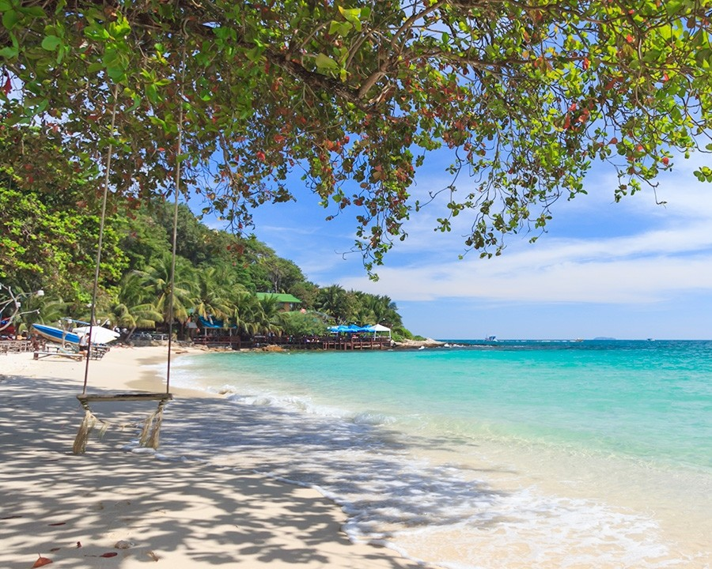

หน้าแรก
เนื้อหา
ติดต่อ
แนะนำ 8 อันดับ สถานที่ท่องเที่ยว
จังหวัดระยอง

"เกาะเสม็ด"
เป็นหนึ่งในสถานที่ท่องเที่ยวที่มีชื่อเสียงที่สุดของจังหวัดระยอง เป็นเกาะที่ตั้งอยู่ในเขตอุทยานแห่งชาติเขาแหลมหญ้า-หมู่เกาะเสม็ด มีชื่อเสียงเรื่องหาดทรายขาว น้ำทะเลใส และบรรยากาศที่เหมาะสำหรับการพักผ่อนทั้งแบบส่วนตัวและแบบครอบครัว ใครที่มาเที่ยงจัวหวัดระยองแล้วไม่มาที่เกาะเสม็ดถือว่ายังมาไม่ถึง
ที่อยู่ :
เกาะเสม็ด ตำบลบ้านเพ อำเภอเมืองระยอง จังหวัดระยอง
"แหลมเจริญ"
เป็นสถานที่ท่องเที่ยวที่เงียบสงบ เหมาะสำหรับการพักผ่อนและสัมผัสกับบรรยากาศของทะเลอ่าวไทย พร้อมทั้งยังมีของกินมากมายและกิจกรรมบริเวรชายหาดมากมายชื่อ วาดรูป ชงกาแฟ เล่นว่าว และอื่นๆอีกมากมาย แถมยังมีร้านอาหารอร่อยๆอยู่บริเวรหน้าหาดอีกด้วย หากเบื่อตัวเมืองแล้วแวะมาพักผ่อนได้
ที่อยู่ :
แหลมเจริญ ตำบลปากน้ำ อำเภอเมืองระยอง จังหวัดระยอง
"อ่างเก็บน้ำดอกกราย"
เป็นแหล่งท่องเที่ยวธรรมชาติที่สวยงามและเงียบสงบ ซึ่งเหมาะสำหรับการพักผ่อนท่ามกลางบรรยากาศของธรรมชาติ แนะนำให้มาช่วงบ่ายและเย็นจะเป็นช่วงที่อากาศดีมากๆ แถวถ้าไปช่วงประมาณเดือนธันวาคมจะได้รับลมหนาวตลอดทั้งวัน แถวมีดอกไม้ฤดูหนาวบานอย่างสวยมากตลอดทั้งอาทิตย์อีกด้วย
ที่อยู่ :
อ่างเก็บน้ำดอกกราย ตำบลดอกกราย อำเภอเมืองระยอง จังหวัดระยอง
"หาดสวนสน"
เป็นหาดทรายที่มีความสวยงามและเงียบสงบ เหมาะสำหรับการพักผ่อนในวันหยุด โดยเฉพาะสำหรับผู้ที่ชื่นชอบธรรมชาติและต้องการหลีกหนีความวุ่นวาย โดยที่ตลอดทั้งชายหาดจะเต็มไปด้วยต้นสนมากมาย ซึ่งได้ทั้งลมที่เย็นตลอดวันและความร่วมลื่นแบบหาที่ไหนไม่ได้แล้วนอกที่หาดสวนสนที่เดียวเท่านั้นในระยอง
ที่อยู่ :
หาดสวนสน ตำบลเพ อำเภอเมืองระยอง จังหวัดระยอง
"แหลมแม่พิมพ์"
เป็นแหลมที่มีวิวทิวทัศน์ของทะเลและภูเขาที่น่าทึ่ง เหมาะสำหรับการพักผ่อน หาดแหลมแม่พิมพ์มีทรายขาวสะอาดและน้ำทะเลใส เหมาะสำหรับการเล่นน้ำหรือพักผ่อนริมทะเล สถานที่ที่ไม่พลุกพล่าน ทำให้เหมาะสำหรับการพักผ่อนท่ามกลางธรรมชาติ
ที่อยู่ :
แหลมแม่พิมพ์ ตำบลบ้านเพ อำเภอเมืองระยอง จังหวัดระยอง
"ถนนยมจินดา"
เป็นถนนทางเศรษฐกิจสายแรกของระยองที่มีประวัติยาวนานทั้งแต่สมัย รัชกาลที่ 5 โดยในปัจจุบันได้กลายเป็นที่ท่องเที่ยวทางประวัติศาสตร์ของจังหวัดระยองอีกแห่งและยัง มีสถานที่ท่องเที่ยวสำคัญในตัวเมืองระยองที่ใกล้อีก เช่น วัดโขดหิน, ศาลเจ้าพ่อหลักเมือง, และบริเวณรอบๆ ตลาด
ที่อยู่ :
ถนนยมจินดา ตั้งอยู่ในเขตตัวเมืองระยอง จังหวัดระยอง
"ทุ่งโปรงทอง"
เป็นที่ท่องเที่ยวที่มีทิวทัศน์ของป่าชายเลนและทะเลที่เชื่อมต่อกันอย่างสวยงาม และ นักท่องเที่ยวสามารถเดินสำรวจและเรียนรู้เกี่ยวกับระบบนิเวศที่หลากหลาย โดยจะได้สัมผัสกับต้นไม้ต่างๆบริเวรป่าชายเลนอย่างใกล้ชิดและในบางทีจะมีกิจกรรมสามารถลงไปจับหอยได้ด้วย
ที่อยู่ :
ทุ่งโปรงทอง อุทยานแห่งชาติพรานกระต่าย อำเภอแกลง จังหวัดระยอง
"สวนพฤกษศาสตร์ระยอง"
เป็นสวนพฤกษศาสตร์ที่ตั้งอยู่ในจังหวัดระยอง โดยมีพื้นที่ขนาดใหญ่และหลากหลายประเภทของพรรณไม้ ทั้งในและนอกประเทศ ทำให้เป็นแหล่งท่องเที่ยวที่น่าสนใจสำหรับผู้ที่ชื่นชอบธรรมชาติและพืชพรรณ และมีกิจกรรมพายเรือชมธรรมชาติอย่างใกล้ชิดอีกด้วย
ที่อยู่ :
สวนพฤกษศาสตร์ระยอง ตำบลชากพง อำเภอเมืองระยอง จังหวัดระยอง